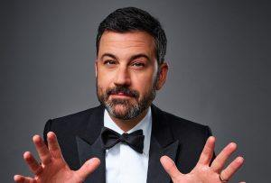

Michael is the author of Staying Married in a Degenerate Age. Follow him on Twitter or Facebook. You can read more of his writing at Honor and Daring.


I try to watch the Oscars every year because it is a good bellwether of what the globalist elites want Americans to think. In past years the Oscars have pushed global warming, gayness, and diversity. This year, the irrational hatred of Donald Trump caused the entire Hollywood establishment to lose all connection to reality. But Trump, and all the Americans who supported him, got the last laugh.

The Oscars got off to an inoffensive start with a performance by Justin Timberlake. I’ve always found Timberlake’s voice annoying so I turned the sound down for this. Next, Jimmy Kimmel, the host of this year’s Oscars, delivered a bland monologue. While I expected a few Trump jokes, Kimmel kept lobbing jokes at Trump the entire night. It is almost as if SJWs are not able to laugh at anything but politics.
Predictably, some of the award winners used their acceptance speech as a time to criticize Trump and the “evil, mouth-breathing hicks” who supported him and who pay to watch Hollywood’s lousy movies.
Mexican actor Gael Garcia Bernal had this self-righteous quote:
I wonder if Bernal has ever criticized Israel’s wall? Or Mexico’s policy on illegal immigrants, which is more harshly enforced that the US’s?
Asghar Farhadi, director of the Best Foreign Language film delivered the harshest rebuke of Trump’s travel ban via a woman who read a statement on his behalf. I wonder if Iran lets just anyone waltz into their country?
Jeff Bezos, CEO of Amazon and owner of the Washington Post attended the Oscars.
I’ve met fans of Ayn Rand who attribute nearly god-like status to corporate CEOs. In her books, CEOs are strong, independent men who drive innovation. They are the few who carry all of civilization on their shoulders. There may be a tiny handful of CEOs who are genuinely like this, but most of them fall far short of the Randian ideal. The average CEO is a Social Justice Warrior (SJW) who believes it is his duty to promote leftwing causes. This is nowhere more evident than in the SJW political ads at this year’s Oscars.
Cadillac had an ad called “Carry” that starts off with the line that “We are a nation divided.” This is obviously a reference to Trump, who leftists view as a divider. To combat this dividedness, Cadillac’s ad posits that “we carry each other forward.” It seems innocuous, but the ad is really promoting diversity—the very thing that voters rejected when they voted for Trump.
This is an odd ad for the Cadillac because its customer base is the very group of people who voted for Trump. Nothing like insulting your customers. This ad made me want to (1) Never buy a Cadillac, and (2) Shut down all immigration. By the way, was that the music from The Mission in the ad? How lame.
Hyatt had a similar ad set to the Burt Bacharach tune, “What the world needs now is love.” There is a scene where a attractive woman in a hijab picks up something for a white woman sitting across from her. Of course, this is a response to Trump’s temporary travel ban. Let me just say that there is no other country on earth that determines its immigration policy on “love, sweet love.”
Audible, which is owned by Jeff Bezos, sponsored an ad that featured gay actor Zachary Quinto reading a quote from George Orwell’s 1984:
If he were allowed contact with foreigners he would discover that they are creatures similar to himself and that most of what he has been told about them is lies. The sealed world in which he lives would be broken, and the fear, hatred, and self-righteousness on which his morale depends might evaporate.
The implication is that Trump, and the 63 million people who voted for him, are stupid, hateful xenophobes because they don’t want open borders. It also plays to leftist fantasies that Trump is a totalitarian.
The New York Times ran an ad trying to defend itself against Trump’s charge that they are fake news. My thought on the Times and the rest of the anti-Trump media is that they would be a more believable if they gave Trump credit for the good things he is doing while criticizing the bad. By attacking Trump non-stop, they are actually undermining their own credibility because it makes their bias plain to everyone.
While the Oscar ceremony, some actors, and the corporate sponsors all tried to attack Trump, it backfired when the Oscars closed with the worst disaster of Oscar history. Apparently the wrong envelope for Best Picture was given to Faye Dunaway and Warren Beatty. Instead of announcing Moonlight as the Best Picture, Dunaway read La La Land to be the winner.
The cast of La La Land streamed the stage and began reading their acceptance speeches when it was announced that there had been a mistake. It was enormously embarrassing for all involved, but it was good to see the sanctimonious Hollywood types looking like fools. It is almost as if some divine force is battling on behalf of Trump and his supporters.
Most men avoid watching the Oscars because it is always liberal SJW drivel. This year was no exception but the extra dash of Trump derangement was worth the watch. I look forward to eight more years of Hollywood meltdowns.
Read More: The 2016 Oscars Showed Us Which Lies The Hollywood Elite Wants Us To Believe